Examples#
This gallery walks through blockchainkit.economics, one experiment per
breakthrough on the economics history page: focal points and Schelling oracles;
Vickrey’s and Myerson’s auctions and Hanson’s market scoring rule; block
rewards, the halving, fee-only mining and mining games; EIP-1559’s base fee;
Dai, Uniswap and oracle manipulation; and priority gas auctions, sandwiches
and proposer-builder separation.
Each script is self-contained and runs with
python examples/economics/<section>/<script>.py.
Auctions and market makers#
Truthful bidding, the revenue-maximizing auction, and a market maker for predictions.
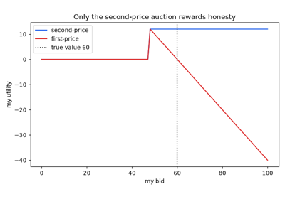
Vickrey’s second-price auction: truthful bidding (1961)
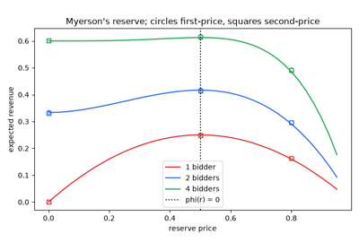
Myerson’s optimal auction and revenue equivalence (1981)
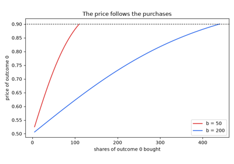
Hanson’s logarithmic market scoring rule (2003)
Coordination and oracles#
Agreeing without communicating, and paying reporters for agreeing on the truth.
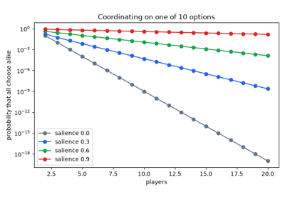
Schelling’s focal points: coordinating without communicating (1960)
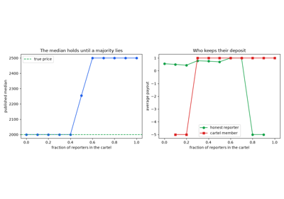
SchellingCoin: a decentralized oracle (2014)
Decentralized finance#
Stablecoins, automated market makers, and the price oracles that lenders trust.
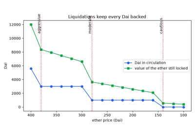
MakerDAO’s Dai: a collateralized stablecoin and liquidation (2017)
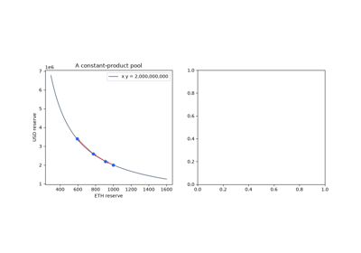
Uniswap’s constant-product market maker and impermanent loss (2018)
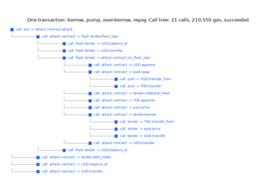
Flash loans and oracle manipulation: the bZx attacks (2020)
Fee markets#
Pricing scarce block space.
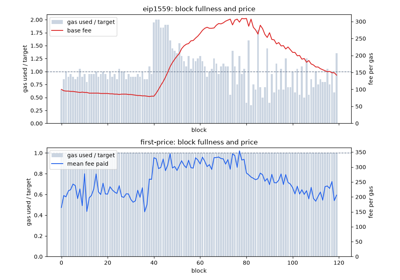
EIP-1559: a base fee, burned (2021), and Roughgarden’s analysis (2020)
Transaction ordering#
Profiting from the order of transactions, and the market that sells it.
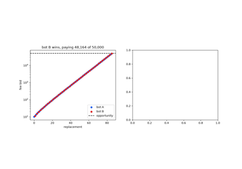
Flash Boys 2.0: priority gas auctions and front-running (Daian et al. 2019)
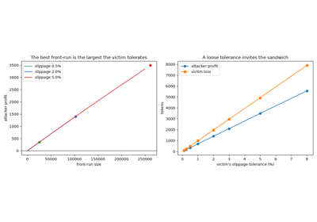
Sandwich attacks on decentralized exchanges (Zhou et al. 2021)
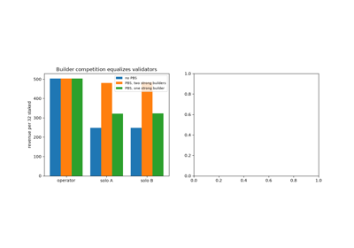
Proposer-builder separation and MEV-Boost (2022)
Block rewards#
Why miners follow the rules, how new coins are issued, and what happens when they stop.
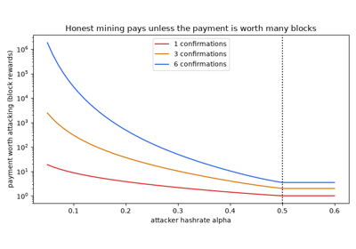
Nakamoto’s incentive: block rewards and fees (2008)
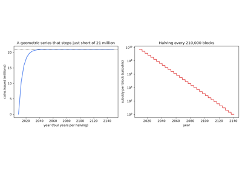
Fixed supply and the halving schedule (2009)
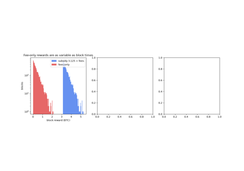
The instability of Bitcoin without the block reward (Carlsten et al. 2016)
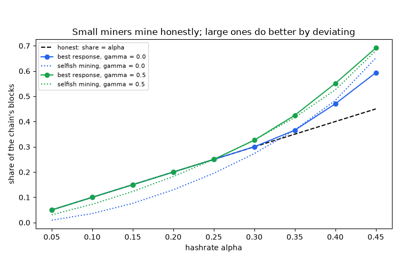
Mining games: when honest mining is an equilibrium (Kiayias et al. 2016)